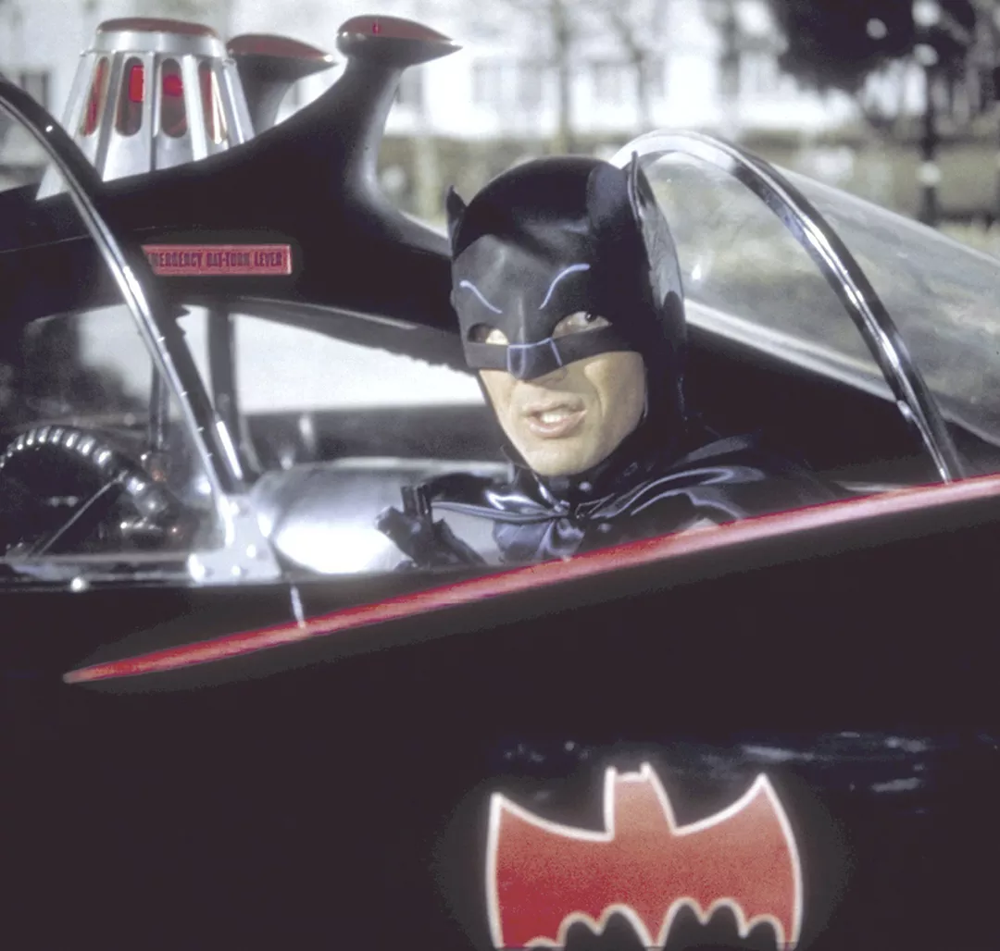

Batman é um personagem fictício e super-herói da editora norte-americana DC Comics, criado pelo escritor Bill Finger a partir dos esboços do desenhista Bob Kane, aparecendo pela primeira vez na revista Detective Comics #27 com o nome "Bat-Man". O personagem não possui superpoderes meta-humanos, mas é o ápice do potencial humano através de treinamento intenso, intelecto genial e riqueza. Seus "poderes" reais são sua mente dedutiva (maior detetive do mundo), maestria em artes marciais, força de vontade inabalável, tecnologia de ponta e capacidade de planejamento estratégico.
